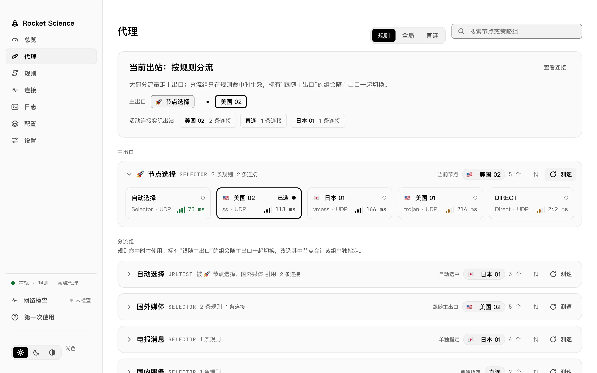
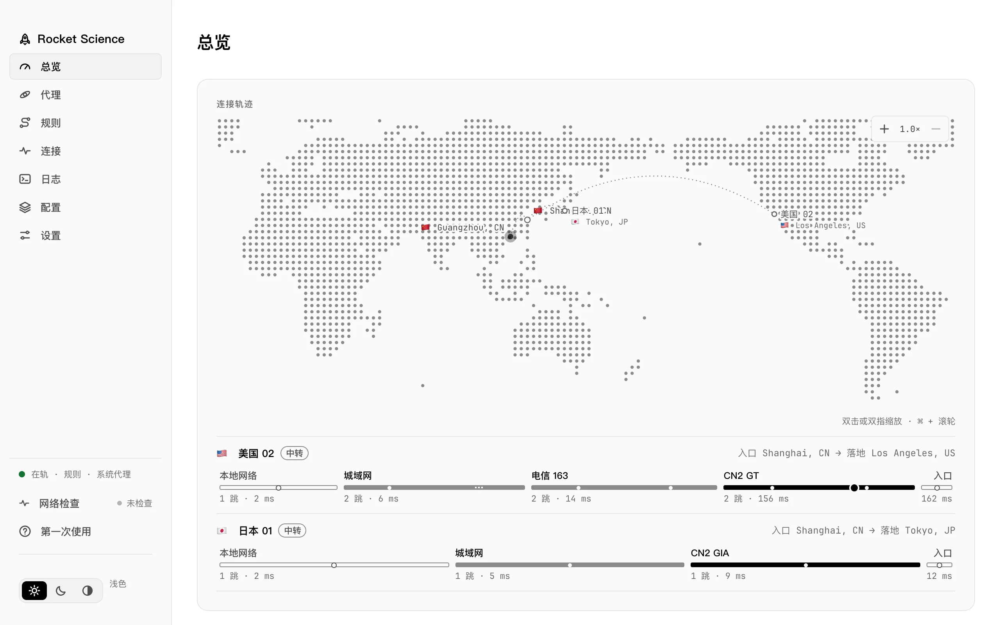
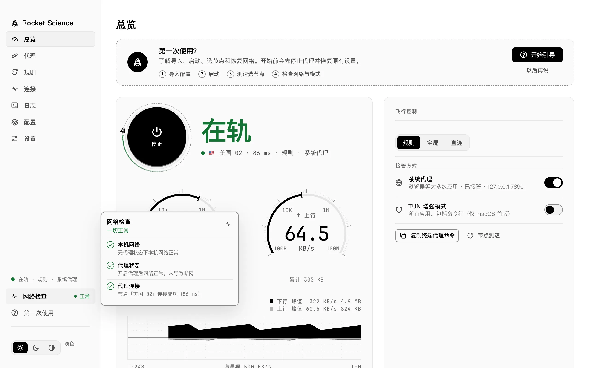
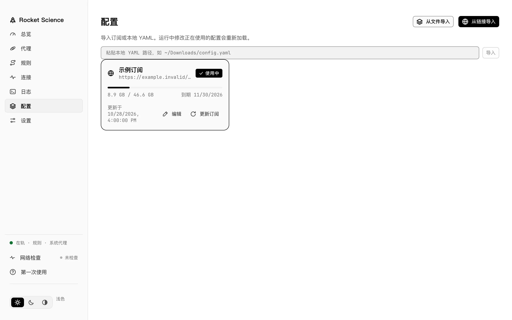
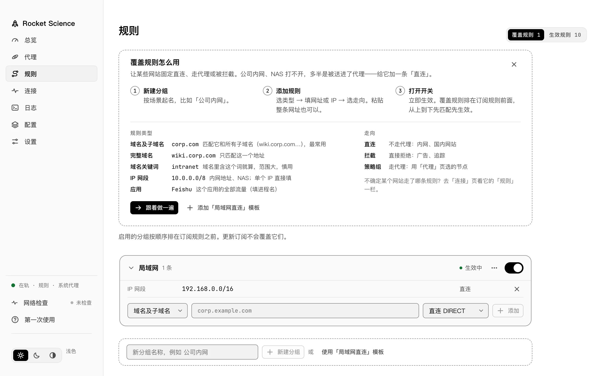
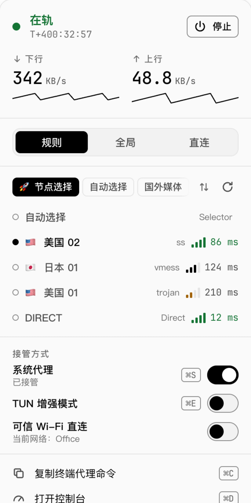
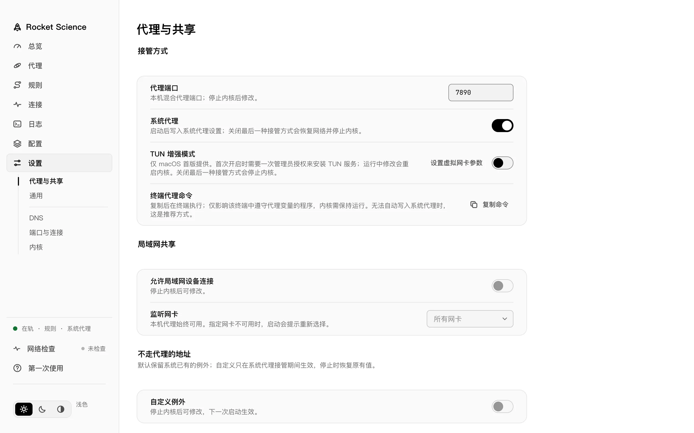

总览面板与一键启停
集中显示当前运行状态、出口节点、实时上下行速率与近 24 秒流量曲线，并在同页切换规则、全局、直连模式及接管方式。
所有界面均直接呈现内核真实状态，不做隐藏猜测，停止或退出时自动恢复原有网络设置。
集中显示当前运行状态、出口节点、实时上下行速率与近 24 秒流量曲线，并在同页切换规则、全局、直连模式及接管方式。
按主出口与分流组展示策略链路，支持一键批量延迟测速、按延迟排序与关键词筛选，切换节点即时生效。

在总览底部直观展示当前出口的入口地、落地节点与逐跳链路，配合缩放地图查看活跃出站路径。

依次验证本机直连、代理接管与节点连通性；定位到可用节点后先向你确认再切换，不私自改动配置。

支持订阅链接导入、本地 YAML 文件导入及定时自动更新，并在内置编辑器中直接校验和修改配置。

启用的覆盖分组按顺序排在订阅规则之前，更新订阅也不会覆盖你的自定义规则，并提供内置模板与向导。

无需切回主窗口即可查看实时速率、切换路由模式、选节点、开关系统代理或可信 Wi-Fi 直连，并复制终端代理命令。

精细配置系统代理、端口、DNS、局域网共享与 GEO 数据库；停止代理或退出应用时自动恢复用户的原始网络代理设置。

直接录制自应用真实界面：首次使用引导、分步网络检查、节点测速与切换。
从导入配置、启动内核到测速选节点，逐步高亮对应控件。
逐项排查本机直连、代理接管与节点连通性并给出结果。
一键测试策略组延迟并在当前窗口直接切换目标节点。
macOS、Windows 与 Linux 均支持系统代理与退出自动恢复；TUN 增强模式目前仅提供于 macOS。
| 平台 | 系统代理 | TUN 增强模式 | 菜单栏 / 托盘 | 发布格式 |
|---|---|---|---|---|
| macOS 13+ Apple Silicon / Intel |
支持（自动写入与恢复） | 支持（首次需一次管理员授权） | 菜单栏速控面板 | DMG |
| Windows 10/11 x86_64 · WebView2 |
支持（自动写入与恢复） | 暂未提供（仅 macOS） | 系统托盘面板 | 安装程序 / 便携 ZIP |
| Linux x86_64 · GTK3 + WebKitGTK 4.1 |
支持（GNOME / KDE） | 暂未提供（仅 macOS） | 系统托盘面板 | .deb / .tar.gz |
当前发布的构建尚未进行商业代码签名或公证，请按对应平台的首次启动说明放行。
支持 macOS 13 及以上（Apple Silicon 与 Intel）。
首次打开若提示无法验证开发者，请右键应用选择「打开」，或在终端执行：
xattr -dr com.apple.quarantine "/Applications/Rocket Science.app"支持 Windows 10/11（需系统已安装 WebView2 运行时）。
若 SmartScreen 弹出保护提示，点击「更多信息」→「仍要运行」即可启动。
前往 Releases 下载需要 GTK3 与 WebKitGTK 4.1 运行库（Debian / Ubuntu 可先安装）：
sudo apt install libwebkit2gtk-4.1-0 libgtk-3-0不会。应用在开启系统代理或 TUN 前会记录原有网络配置，停止代理或退出应用时自动恢复。
macOS 位于 ~/Library/Application Support/RocketScience，Windows 位于 %AppData%\RocketScience，Linux 位于 ~/.config/RocketScience（也可通过 ROCKETSCIENCE_DATA_DIR 自定义）。
不会。代码中不包含任何遥测、统计或崩溃上报；所有网络请求仅限你配置的订阅拉取、连通性检测、节点 IP/位置查询与 GEO 数据库更新。
当前在 go.mod 中固定集成 github.com/metacubex/mihomo v1.19.33。
项目主代码采用 GPL-3.0 许可证，第三方依赖许可声明见仓库根目录的 THIRD_PARTY_NOTICES.md。